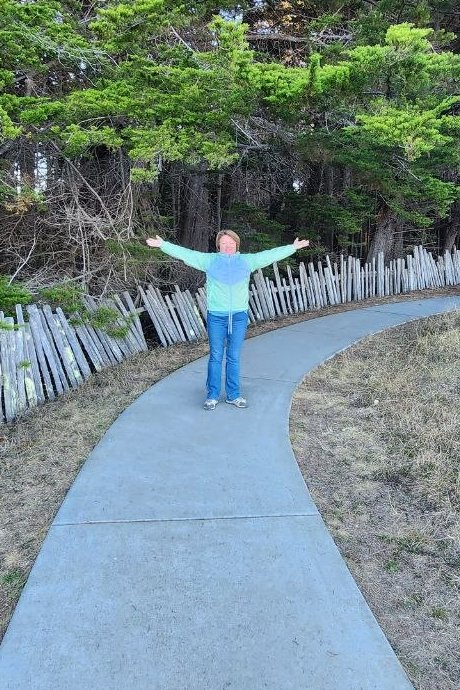

Давайте я вас познакомлю с собой, а на онлайн-встрече я познакомлюсь с вами.
Меня зовут Лида, и я медиатор по моделированию радостного настоящего) А это значит, со мной кроме радости ничего не светит😉 Не шучу)
Я человек открытый во всех отношениях, и поэтому мне очень легко общаться с любым человеком. Но так было не всегда.
Я много лет была в психологии и коучинге, но чем больше я изучала эти направления, тем больше понимала, что там есть радость, но она временная. А я искала радость как норму жизни, без выпаданий из неё.
Всё моё любопытство было направлено на тему отношений, так как многие годы я не могла выстроить отношения с внешним миром, потому что не знала, что отношения начинаются внутри меня.
Я искала тех, кто полюбит меня. Я искала тех, кто позаботится обо мне. Я искала тех, кто поймёт меня, и у меня перестанет болеть внутри.
Я искала возможность избавиться от боли, которую я чувствовала в отношениях с другими людьми.
В моей жизни было много разных историй, которые развернулись так, что в результате я стала той,
НО самое главное открытие, которое я сделала, это то, что совсем не обязательно жить так, чтобы было больно.
Это можно НЕ выбирать. Можно НЕ выбирать жить в боли. Можно выбирать жить так, как хочется.
Мне хотелось жить в радости и удовольствии - теперь я так и живу.
Я так живу и в своих сессиях приглашаю именно в такую жизнь, но не настаиваю. Я не люблю, когда меня ограничивают в свободе, поэтому и я никому ничего не навязываю.
Интересно - записывайтесь, и увидимся.
Не интересно - нет проблем. Я всегда рада честному выбору человека.
Ближе, чем мы у Себя, больше никого нет.
Личные сессии я провожу по средам.
Онлайн · 60 минут · разовая встреча
Выбирайте удобное время и записывайтесь.
Дальше вы перейдёте к моему помощнику, который вас запишет на удобное для вас время. Все вопросы вы можете задать ему, и он вам с радостью ответит.
Обнимаю, увидимся.